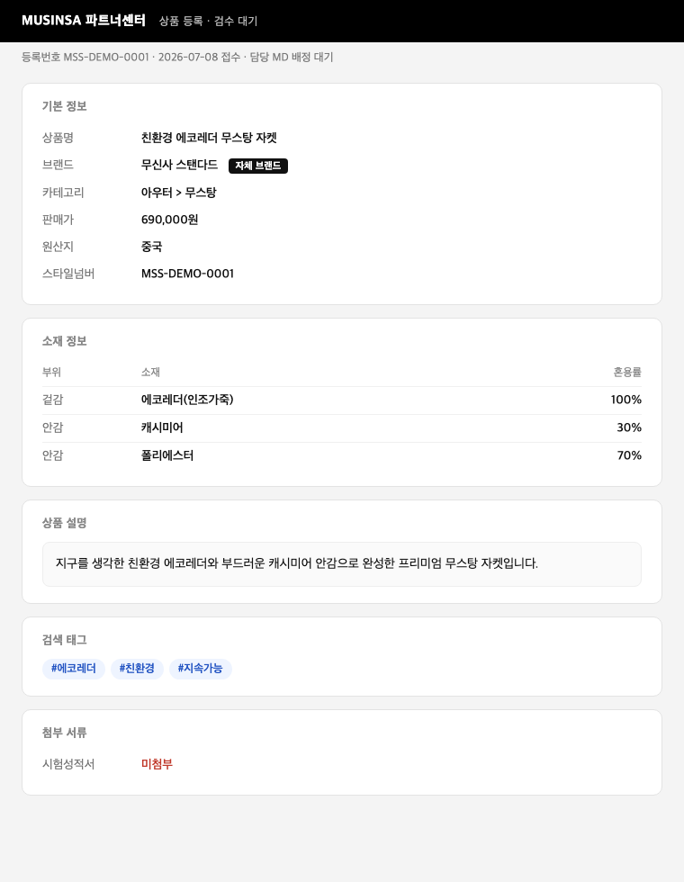

Listing Compliance
무신사musinsa-listing-complianceCodex 플러그인
상품 표시정보(혼용률·원산지·친환경 표현)를 규칙과 시험성적서에 대조해 BLOCK / WARN / PASS로 판정하고, 정정안과 반려 사유서 초안까지 만드는 MD·검수팀용 상시 심사 도구.
무엇을 하나
무신사의 표시정보 검수는 '입점 1회 게이트'에 몰려 있다. 그래서 등록 후 바뀌는 상세페이지, 블랙리스트에 없는 새 그린워싱 신조어, 나중에 갱신된 규칙이 이미 올라간 상품들에 소급 적용되지 않는 문제를 놓친다. 실제로 자사 PB의 '#에코레더' 친환경 광고가 수년간 통과되다 공정위 경고를 받았다 — 패션업계 첫 친환경 표시 제재다.
이 도구는 그 검수를 변경 이벤트(등록·수정·시즌·정책 갱신)마다 자동 집행으로 바꾼다:
- 그린워싱 탐지 — 등재 금지표현은 즉시 격발, 미등재 신조어('에코퍼')는 의미로 잡아 사람 확인 후보로.
- 성적서 대조 — 부위별 혼용률 주장을 시험성적서와 수치 비교. 안감이 "캐시미어 30%"라는데 성적서가 아크릴 100%면 걸린다.
- 소급 재스캔 — 룰이 갱신되면 판매중 상품 전체를 재판정. 자사 PB도 예외 없음.
어떻게 쓰나
등록 화면 캡처를 첨부하거나 상품 정보를 붙여넣고 "이 상품 검수해줘" — 그 한마디에 아래 과정이 한 번에 돈다. 처음이면 아무것도 없이 "시연해줘"만 해도 번들 샘플로 돈다.
(성적서는 JSON)
시험성적서만은 이미지가 아니라 데이터(JSON)로 넣는다 — 혼용률 수치 판정을 OCR에 태우지 않기 위한 의도된 제한.
무슨 결과가 나오나
판정 리포트 한 장: 판정(BLOCK/WARN/PASS) + 위반 목록(규칙·근거 URL) + 정정안 + 반려 사유서·셀러 응대 초안. 셀러에게 보낼 문서까지 초안이 나오므로 MD는 검토·확정만 한다.

sample/demo/등록화면캡처.png). 안감을 '캐시미어 30%'라고 주장하는데 시험성적서가 없다. 기대 판정 BLOCK.번들 데모 3종의 기대 결과:
| 데모 | 기대 결과 |
|---|---|
가짜 캐시미어 자켓 단건 검수 (sample/input.product.json · 캡처판 sample/demo/등록화면캡처.png) | BLOCK — 그린워싱 표현 + 안감 혼용률 성적서 불일치 |
면 100% 정상 상품 (sample/input.pass.json) | PASS — 깨끗한 상품은 막지 않는다 |
그린워싱 룰 갱신 후 소급 재스캔 (sample/input.rescan.json) | BLOCK 2(자사 PB 포함) · PASS 1 · REVIEW 1 |
경제적 효과
사전조사에서 확인된 비용 사건들이 이 도구가 막는 것의 크기를 보여준다:
- 무신사 자체 전수조사: 다운·캐시미어 7,968개 중 677개(8.5%)가 혼용률 표기 미달 — 위반은 예외가 아니라 상시 존재한다.
- '택갈이' 사건 — 중국산 10만원대 구두를 프리미엄 가죽으로 홍보해 60~70만원대에 판매.
- 성적서 의무화 약속 1년 안에 패딩 충전재 오표기 재발 — 수작업 검수로는 재발을 못 막는다.
절감은 세 축이다:
- 제재·사고 비용 회피 — 위반이 소비자·언론·공정위보다 먼저 내부에서 걸린다. 제재 1건의 비용은 과징금 리스크 + 환불·회수 + 브랜드 신뢰 손상.
- 전수조사 인건비 — 사건이 터진 뒤 1회성으로 하던 전수조사를, 룰 갱신 때마다 자동으로 반복한다.
- 검수 공수 축소 — 위 조사 기준 위반율 8.5%라면, 정상 91.5%는 사람 손을 거의 타지 않고 MD는 BLOCK·REVIEW 건만 본다.
위 산정은 공개 조사 수치에 보수적 가정(건당 5분)을 붙인 추정이다. 과징금·매출 영향은 사건별로 달라 수치로 단정하지 않는다.
선 긋기
자동 게시·차단·발송은 없다. BLOCK은 "게시 보류 권고"이고, 모든 정정·문서는 사람(MD)이 확정한다.